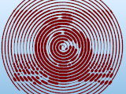

 SpiralImage is a proposed library module for the Persistence of Vision Raytracer (POV-Ray) Object Collection that creates an Archimedean spiral based on a pigment. This pigment can be of an image map.
| Key Files | |
|---|---|
| File | Description |
spiralimage.html |
The user manual (this document) |
spiralimage.inc |
The SpiralImage library. |
spiralimage.pov |
A scene description file demonstrating the use of SpiralImage |
spiralimage.jpg |
Sample output images |
spiralimage_color.png |
|
spiralimage_thumbnail.jpg |
|
spiralimage_sample.jpg |
A sample input image |
| Administrative Files | |
| File | Description |
spiralimage_description.txt |
A brief description of SpiralImage |
spiralimage_keywords.txt |
A list of keywords |
spiralimage_prereqs.txt |
Prerequisites |
spiralimage.css |
Formatting for this user manual |
Depending on where you obtained this library, there may be other administrative files included with this download,
including one named README{series-of-digits}.html which contains important information about using the POV-Ray Object Collection.
Please see the Object Collection User Guide if this file is not present.
All file names in this module and all global and local identifiers defined in spiralimage.inc comply fully with the
Object Collection naming standards, as
revised August 2008 and
proposed August 2012.
The files in this module may be safely stored in the same folder as other fully compliant Object Collection modules.
The reserved prefixes for this module are “SpiralImage” and “SpImg,”
including any uppercase and lowercase variants.
SpiralImage uses the Object Collection module SphereSweep, which reserves the prefixes “SphereSweep” and “SSwp,”
including any uppercase and lowercase variants.
To avoid conflicts, do not introduce into your scene description file any identifiers with any of these prefixes as names, or any identifiers that start with any of these prefixes plus an underscore.
The standard include files arrays.inc and functions.inc are used by spiralimage.inc.
In addition, SphereSweep uses shapes.inc.
The identifier View_POV_Include_Stack from the standard include file debug.inc is referenced by spiralimage.inc, although debug.inc itself is not used.
Include this file once prior to using any of the macros:
#include "spiralimage.inc"
Including the file more than once is harmless, though unnecessary.
POV-Ray may issue a warning that the experimental feature spline is used. This is normal and expected.
Returns an Archimedean spiral object, with 1 POV unit between spirals.
Note: There is a small chance that you may get a “Reallocating” warning.
This is only informational, and normally occurs only with an unusually small Resolution argument.
Scalar arguments will be automatically promoted to colors or vectors where necessary.
| Formal Parameter | Type | Description |
|---|---|---|
p_Image |
pigment | The pigment to be interpreted. Square <0, 0, 0>...<1, 1, 0> will be sampled,
so a pigment { image_map { ... } } does not need to be scaled.
|
uv_Size |
2-D vector | The dimensions of the final spiraled image in POV units. The smallest allowable size is <1, 1>.
Because the spiral circumscribes the rectangle, the final object will be larger than this;
see macros SpImg_Radius() and SpImg_Size_uv()
|
Stop |
float | The position angle in degrees of the outer end of the spiral. 0 is up, 90 is right. |
Direction |
float | The direction of the spiral: 1 spirals outward clockwise; and -1 spirals outward counterclockwise. |
Thinnest |
float | The line thickness for the darkest points. |
Thickest |
float | The line thickness for the lightest points. |
Frame |
float | The line thickness outside the unit square; or a negative number to use the pigment areas outside the unit square. |
c_Gray |
color | The gray scale function. See the gray scale reference identifiers section for some preset identifiers. |
Method |
float | The type of object to be constructed. See the method reference identifiers section for the codes to use and their descriptions. |
Resolution |
float | The minimum number of sampled points per unit length along the spiral. |
Gamma-decodes a pigment, and returns the decoded pigment. The original pigment is unchanged. This macro should be used on image maps of JPEG images with POV-Ray 3.5 or 3.6. It should not be necessary with PNG images or with POV-Ray 3.7 or later.
| Formal Parameter | Type | Description |
|---|---|---|
Pigment |
pigment | The pigment to be decoded. |
Gamma |
float |
A positive number or a code for a special transfer function:
|
Returns the radius of a circle that circumscribes a given rectangle.
This may be used to estimate the size of the object returned by SpiralImage(),
but note that any line thickness is not considered.
| Formal Parameter | Type | Description |
|---|---|---|
uv_Size |
2-D vector | The dimensions of the rectangle. A scalar will be promoted to a vector. |
Scales a pigment around the square <0, 0, 0>...<1, 1, 0>, and returns the scaled pigment. The original pigment is unchanged. This macro can be used to zoom in to or out from the center of an image.
| Formal Parameter | Type | Description |
|---|---|---|
Pigment |
pigment | The pigment to be scaled. |
Scale |
vector | The scale factor. A float may be used for uniform scaling |
Returns a 2-D vector containing the dimensions of a rectangle that inscribes a given circle.
Use this for the uv_Size argument to SpiralImage() if you desire a given size for the entire spiral.
Note that any line thickness is not considered.
| Formal Parameter | Type | Description |
|---|---|---|
Radius |
float | The radius of the circle. |
Aspect |
float | The ratio of the rectangle’s width to its height. |
| Identifier | Type | Description | Value |
|---|---|---|---|
SPIMG_GRAY |
float | The gray scale function used by POV-Ray’s .gray operator,
best for scenes with assumed_gamma srgb or assumed_gamma 2.2,
or for POV-Ray 3.5 or 3.6 scenes with no assumed_gamma setting.
|
rgb <0.297, 0.589, 0.114> |
SPIMG_SRGB |
float | The gray scale function for the HDTV BT.709 color system, appropriate for gamma-decoded sRGB images. | rgb <0.2126, 0.7152, 0.0722> |
| Identifier | Type | Description |
|---|---|---|
SPIMG_APPROX |
float | A linear sphere_sweep object with many short segments.
This method is best for objects that are part of a CSG difference or intersection.
This is the fastest method for transparent spirals;
but if rendering artifacts appear, SPIMG_MERGE should be used.
|
SPIMG_MERGE |
float | A merge of spheres and cones.
This method is good for transparent spirals, though SPIMG_APPROX is faster.
|
SPIMG_SPHERE_SWEEP |
float | A cubic sphere_sweep object.
This method is slow and prone to rendering artifacts.
|
SPIMG_UNION |
float | A union of spheres and cones. This method is best for opaque objects that are not part of a CSG difference or intersection. |
| Identifier | Type | Description |
|---|---|---|
SPIMG_BT709_FN |
float | A special code for reading HDTV BT.709-encoded images. |
SPIMG_BT2020_FN |
float | A special code for reading HDTV BT.2020-encoded images. |
SPIMG_SRGB_FN |
float | A special code for reading sRGB-encoded images. |
Technical note: BT.709 and BT.2020 differ only in numerical precision. As SpiralImage exceeds the precision of both, this difference becomes moot.
| Identifier | Type | Description | Value |
|---|---|---|---|
SPIRALIMAGE_VERSION |
float | The SpiralImage version. | 2.1 |
Any identifiers in spiralimage.inc that are not documented in this User Manual are considered “private”
and are subject to change or elimination in a future update.
Copyright © 2022, 2025 Richard Callwood III. Some rights reserved.
This library is free software: you can redistribute it and/or modify it under the terms of the GNU Lesser General Public License as published by the Free Software Foundation, either version 3 of the License, or (at your option) any later version.
This library is distributed in the hope that it will be useful, but WITHOUT ANY WARRANTY; without even the implied warranty of MERCHANTABILITY or FITNESS FOR A PARTICULAR PURPOSE.
| Version | Date | Notes |
|---|---|---|
| 1.0 | 2022 February 3 |
|
| 2.0 | 2022 February 13 |
|
| 2.1 | 2025 October 4 |
|
{kind=link}